写本文得目的主要是为了帮助我的笨蛋马q儿子，面向0基础的小白，看完这篇文章你也就可以为自己重装系统，不花一份钱啦！
简单装机
注意，名为简单装机的原因是一以下所有的步骤都是理想状态下的，由于系统、各厂商bios不同，历史各种版本迭代原因，带来了许多兼容性问题，本应该丝滑流畅的安装过程总有可能遇到难以解决的兼容性问题，我可以尽可能的把我所遇到的问题及解决办法写下来，但不可避免会让文章变得冗长，晦涩，因此我决定不写这方面的坑，如果你遇到了，去<baidu.com>或者<google.com>上寻找解决方案吧！网络是最大百科全书。
安装前的准备
你需要的硬件准备
- 一个至少8G的U盘
- 一台能上网的PC
你需要的软件准备
下载工具
你可以选用迅雷，尽管它很臃肿。
下载系统
请注意，我希望你仅仅只在<msdn.itellyou.cn>或者微软的官方渠道下载你需要的系统，在其它地方下载系统存在一定的风险。
- 第一步
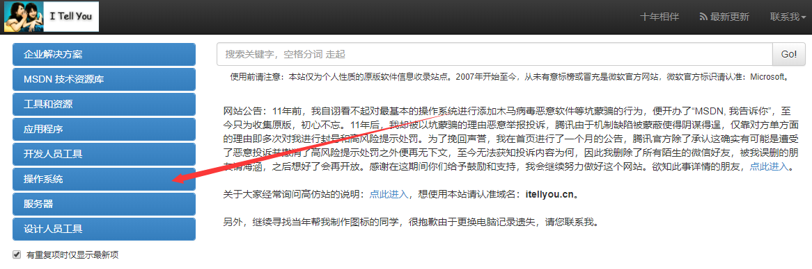 - 第二步
我总是建议你使用当前最高版本的win10
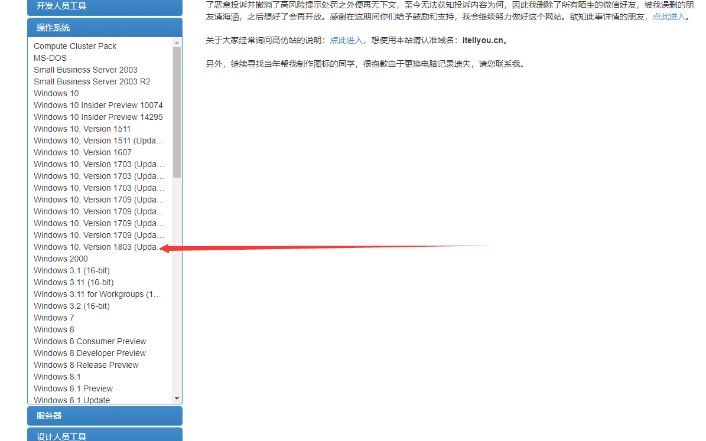 - 第三步
内存高于4G的总是选用x64（64位的）
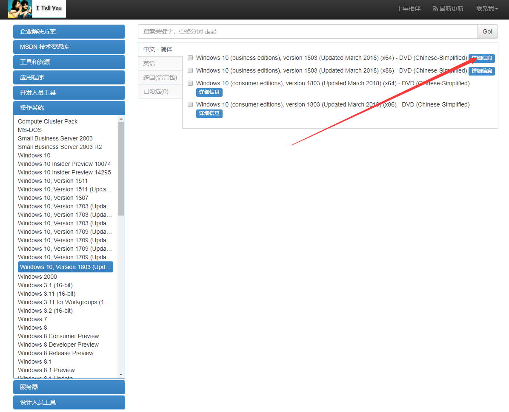 - 第四步
复制这个框内的链接
一般情况下迅雷检测到会自动弹出，如果没有你可以自己打开迅雷新建任务，它会自动识别剪切板的内容，创建下载任务。
选择你想储存到的地方，开始下载。
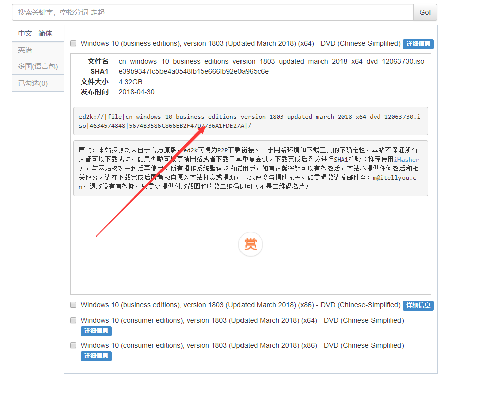
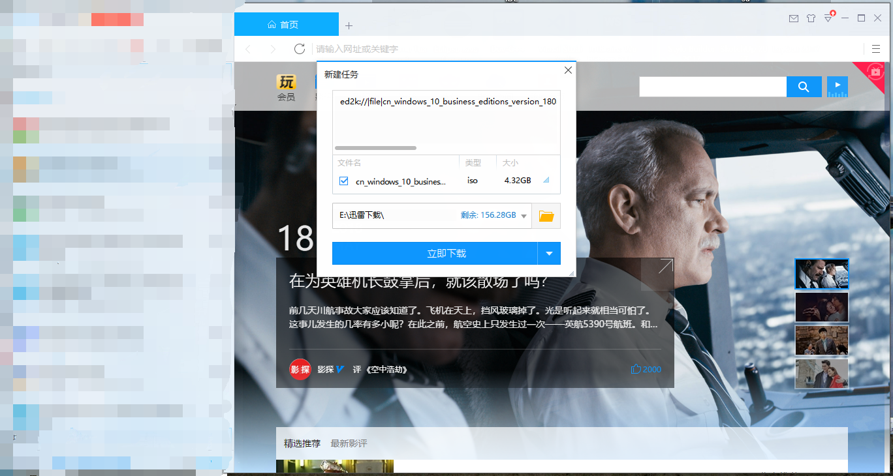
下载安装镜像写入工具
我使用的（UltraISO软碟通 ），你可以去这里下载https://cn.ezbsystems.com/download.htm
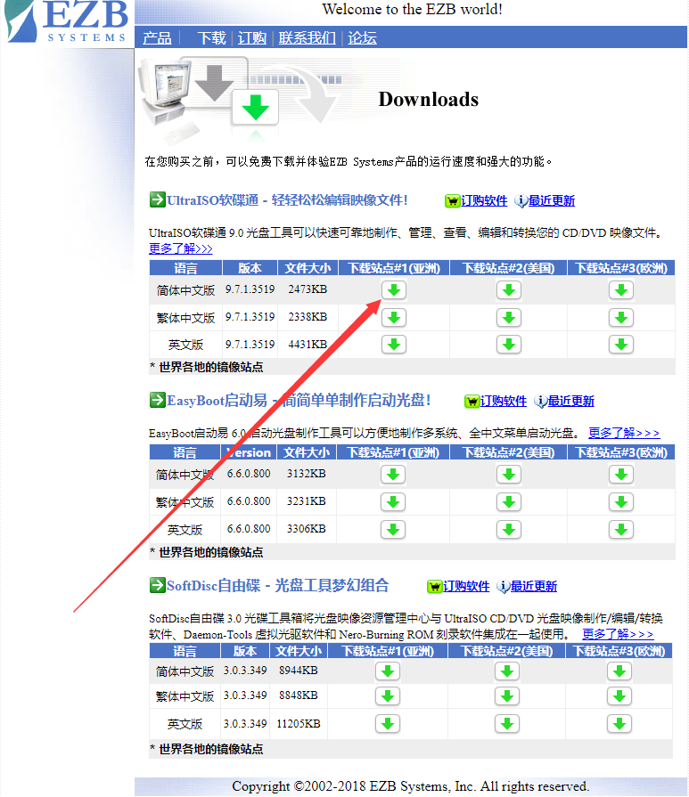
下载后直接安装即可
开始制作系统安装U盘
- 第一步
打开UltraISO
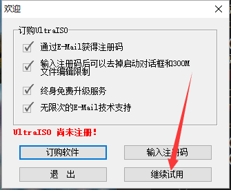
点击试用，对我们来说试用版的功能已经足够了 - 第二步
找到你下载的系统镜像
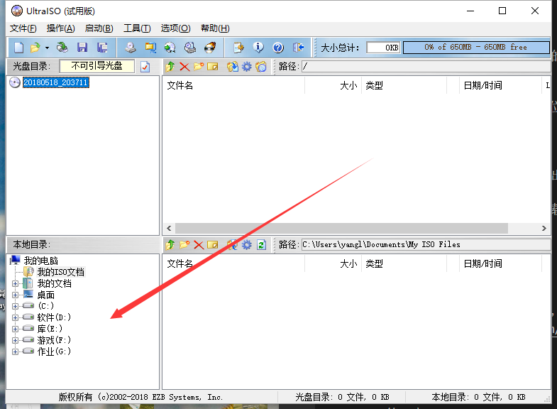
双击它
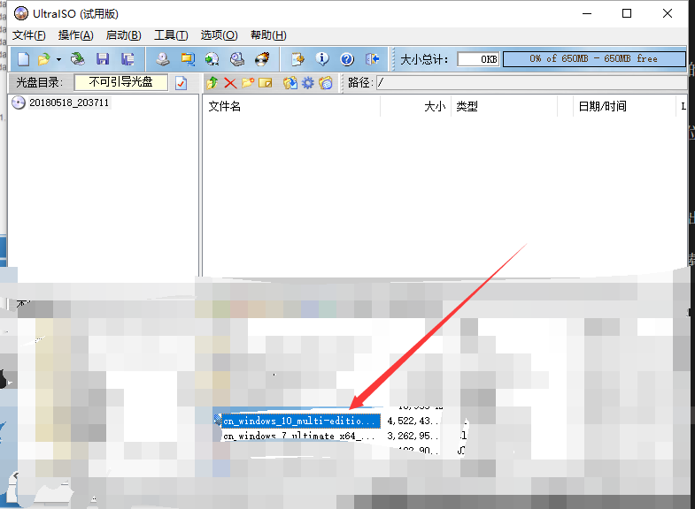
之后你会看见这样的目录及结构，这表示你已经进入镜像文件里了
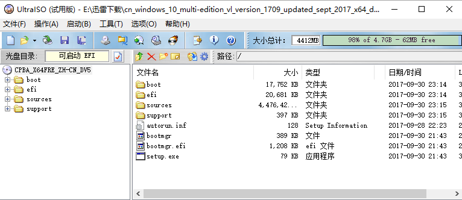 - 第三步
插入U盘
单击上方的启动按钮
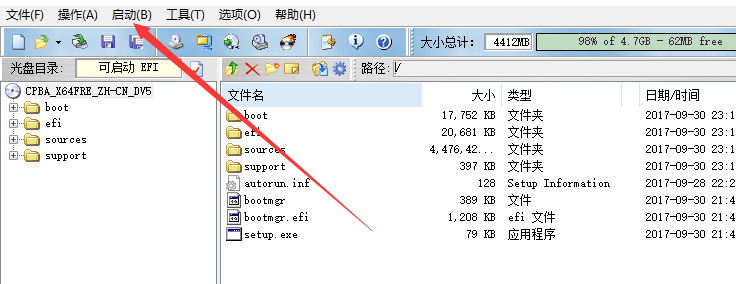
选择写入硬盘镜像
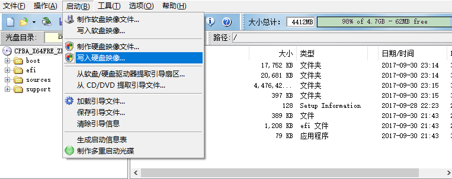
这时就会弹出设置，设置如何把系统镜像写入U盘的方式
写入方式我建议使用USB-HDD的方式
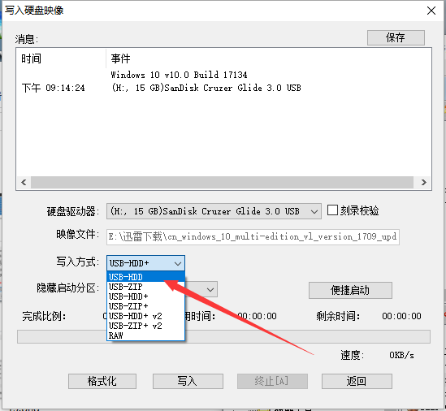
我建议你在写入前格式化你的U盘，这回带来更好的兼容性
请注意备份你的U盘数据
然后点击写入，就开始将系统镜像写入到你的U盘，整个过程大约在5-10分钟
另外请记住你的U盘物理名，这在后面有用。
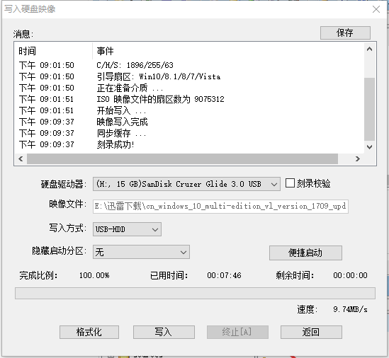
恭喜你！你已经制作好了系统安装U盘
安装系统
安装系统是整个环节最困难最容易出问题的环节，我们得离开我们熟悉的windows进入bios，并且不同品牌的biso往往不尽相同。
选择从我们的U盘启动系统安装
简单方法
方法： 直接插入U盘，开机，就可以直接进入系统安装界面
是的！简单方法我们仅仅只需要插入U盘就行了！一般来说近几年的电脑都支持这种方法，是不是很便利！
复杂方法
请注意！当你无法使用上面的方法进入系统安装界面，通常意味着你的bios很老旧或者厂商对你的bios做了一些奇奇怪怪的修改，你可能会遇见大量的兼容性问题，你可以尝试百度/谷歌相关错误现象/提示来解决
- 复杂方法一
搜索你的电脑品牌+快捷启动，或启动选项，这些教程会很详细的告诉你如何进入快捷启动。
进入快速启动后，选择你的U盘，enter确定就可以进入安装界面了
- 复杂方法二
同样搜索你的电脑品牌+设置启动顺序，你也可以看见大量教程了，按照他们说的做，不要乱设置，设置完重启就可以了。
正式安装系统
如果你成功的从U盘启动了系统安装，你会看见这样的界面
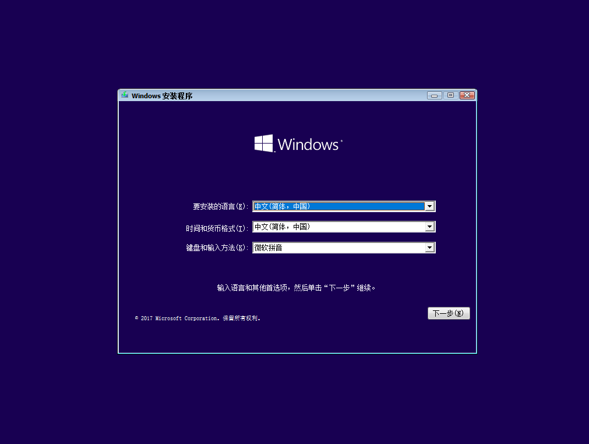
点击下一步,再点击现在安装，你会过几秒后看到这个页面
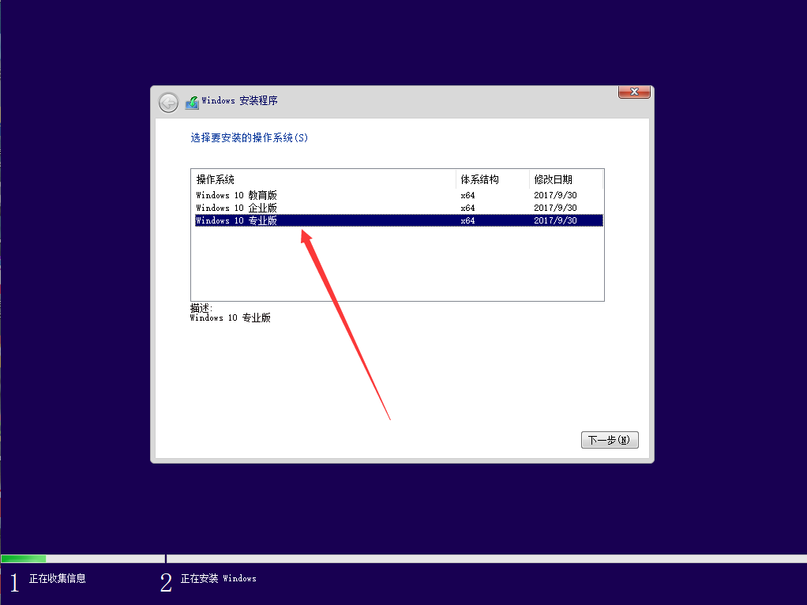
请记住总是选择专业版
点击下一步，我接受许可条款，下一步
选择下方的自定义安装，升级选项总容易出问题
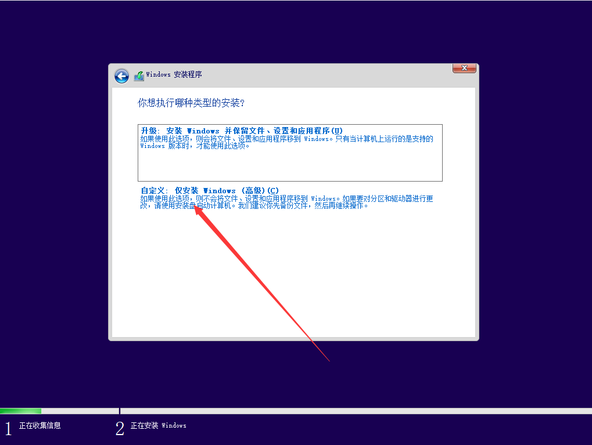
选择后你会看到这样的界面
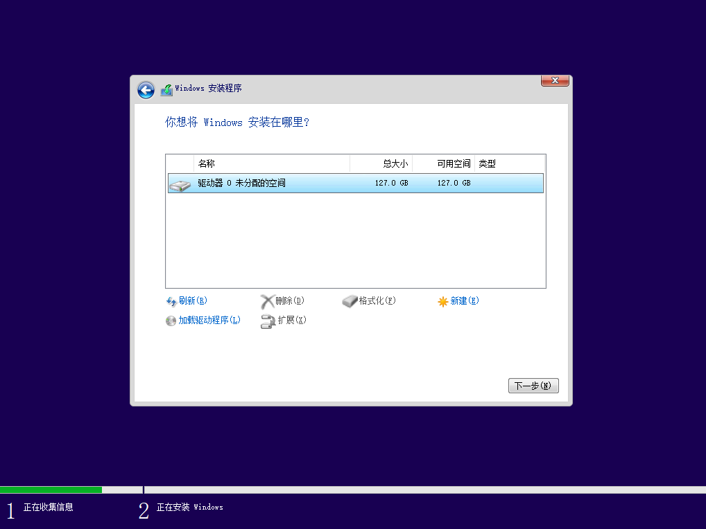
如果你是全新的电脑，这里只会出现未分配的空间，重装的就会出现你的硬盘分区和默认隐藏的分区。
全新的电脑你可以自由分配空间，重装的电脑你选择C盘下一步就可以了。
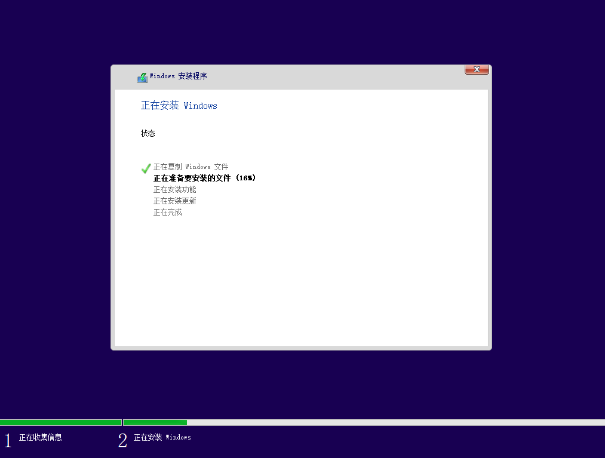
完成后记得一定要拔掉U盘，否则又会进入安装界面。
激活
使用微软账号激活
如果你之前有一台已经激活的win10，并注册了微软账号并在激活的win10上登陆过，在新的win10系统上你登陆你的微软账号就可以自动激活了，激活有数量限制，具体我未测试过。
使用产品密钥激活
你可以直接在淘宝上买到激活码,搜索win10专业版密钥，大概10元一个，激活后你可以注册微软账号，以后都可以激活自己的系统了。
使用kms破解激活
你可以直接使用关键字win10破解搜索到相关工具，而且基本一定能破解，但是这个激活只能维持180天，kms会在180天后自动重新激活，并不方便，而且下载破解软件的过程中，可能感染病毒、被安装流氓软件，这是最不推荐的方式。
ok，一切完工啦！